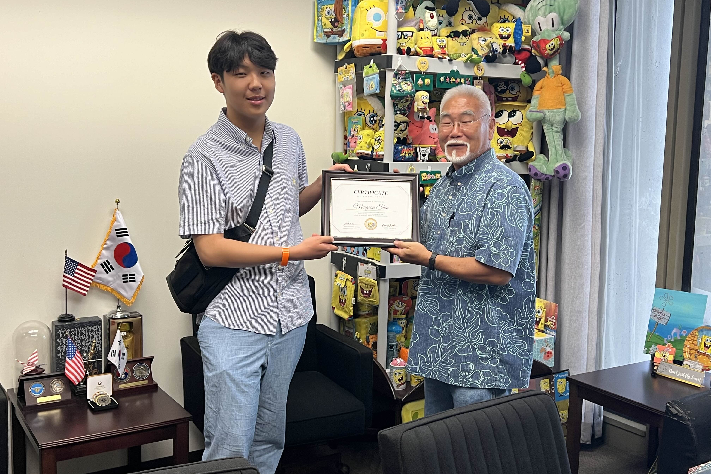
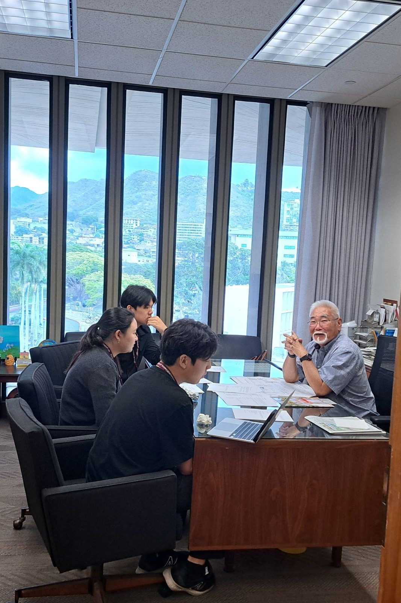
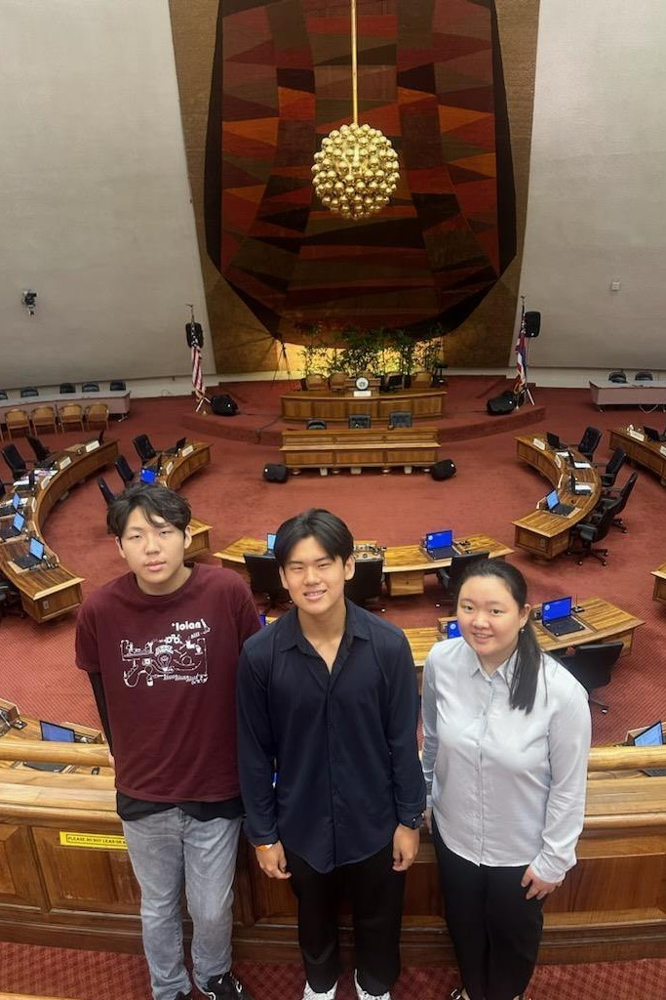

Lead Trombonist
Iolani High School Stage Band
- Lead trombone section as principal performer, providing musical direction and setting performance standards
- Perform solos in concerts and collaborate with the band for active musical engagement
- Encourage fellow musicians to express their voice through music and develop confidence
- Successfully recruited new members, resulting in a full trombone section for the first time in years
- Mentor younger trombone players in technique, music theory, and ensemble performance skills
- Coordinate section rehearsals and ensure synchronized performances during concerts


